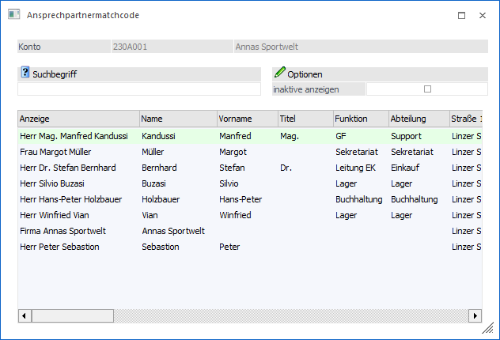
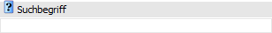
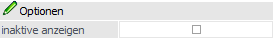
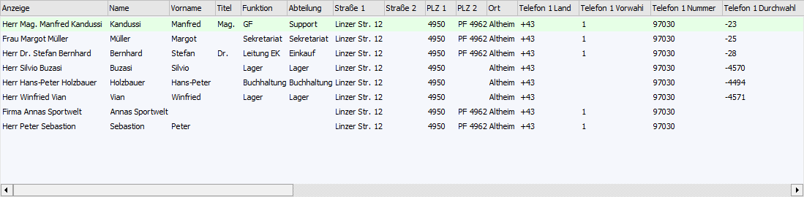
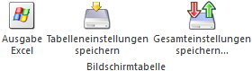

Wenn der Fokus in dem Feld "Ansprechpartner" der Belegerfassung liegt und das Lupen-Symbol bzw. die Taste F9 gedrückt wird, dann öffnet sich das Programm "Ansprechpartnermatchcode". An dieser Stelle kann gezielt nach den Ansprechpartnern des aktuellen Kontos gesucht werden.

Aktuelles Konto
Ø Konto
An dieser Stelle wird das aktuelle Konto der Belegerfassung angezeigt. In der weiteren Folge werden nur die Ansprechpartner dieses Kontos bei der Suche berücksichtigt.
Suchbegriff

Ø Suchbegriff
Die Auswahl kann durch die Eingabe eines Suchbegriffs eingeschränkt werden. Die Suche erfolgt in dem Feld "Anzeige".
Optionen

Ø inaktive anzeigen
Durch Aktivierung dieser Option werden bei der Suche auch Ansprechpartner berücksichtigt, welche das Kennzeichen "inaktiv" im Stamm gesetzt haben.
Tabelle "Suchergebnis"

In der Tabelle werden nach Auslösen der Suche (Button "Ok" oder Suchbegriff bestätigen) die Ansprechpartner gemäß den Suchkriterien dargestellt. Die Reihenfolge der Anzeige ist jene aus dem Personenkontenstamm (Register "Ansprechp.").
Die Zeile jenes Ansprechpartners, welcher im Personenkonto das Kennzeichen "Standard" gesetzt hat, wird in grüner Farbe dargestellt.
Mittels Doppelklicks kann der gewünschte Ansprechpartner aus der Tabelle in das Ausgangsfeld übernommen werden.
Tabellenbuttons

Ø Ausgabe Excel
Durch Anwahl des Buttons "Ausgabe Excel" wird der Inhalt der Tabelle nach Microsoft Excel übergeben.
Ø Tabelleneinstellungen speichern
Die Spalten einer Tabelle können grundsätzlich an beliebige Positionen verschoben, bzw. in der Breite entsprechend angepasst werden. Durch Anwahl des Buttons "Tabelleneinstellungen speichern" werden die Einstellungen benutzerspezifisch gespeichert und bei dem nächsten Aufruf des Programmpunktes wieder vorgeschlagen.
Ø Gesamteinstellungen speichern…
Im Gegensatz zu "Tabelleneinstellungen speichern" können mit "Gesamteinstellungen speichern" mehrere Tabellenaufbauten gespeichert und nach Wunsch geladen werden. Zusätzlich werden Sonderfunktionen der Tabelle (z.B. "Spalte gruppieren") ebenfalls bei der Speicherung bedacht.
Buttons
Ø Ok
Durch Drücken des Buttons "Ok" bzw. der Taste F5 wird die Suche gestartet.
Ø Ende
Mit dem Button "Ende" bzw. der Taste F5 wird das Fenster geschlossen.
Ø Neuanlage
Durch Anwählen des Buttons "Neuanlage" kann ein neuer Ansprechpartner angelegt werden. Hierfür wird der Kontaktestamm geöffnet und die Felder "Umwandeln in" sowie "Kontonummer" vorbelegt.
Beispiel
Ø Editieren
Wird der Button "Editieren" gedrückt, während ein Eintrag in der Tabelle markiert ist, so wird dieser Ansprechpartner im Kontaktestamm zur Bearbeitung geladen. War kein Tabelleneintrag markiert, so wird der Kontaktestamm geöffnet und neue Kontakte können erfasst, bzw. bestehende Kontakte aufgerufen und verändert werden.